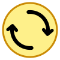
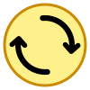
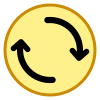
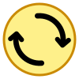
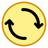

[이전] 끝점 일치 (돌출 전)
화살촉 꺾임점이 원호 끝과 겹침

크기조절 핸들
선 끝으로 시원하게 뻗은 촉
화살촉의 정점을 선분(원호)의 끝단보다 약간 더 바깥쪽(앞쪽)으로 돌출 배치하여, 원호 몸통 끝에 묻히지 않고 화살촉 끝이 시원하게 돋보이도록 조정한 샘플들입니다.

U0 원본 + 2.0px 돌출
보내주신 -5도 코드에서
선분 끝 쪽으로 살짝 전진

-6도 튜닝 + 2.0px 돌출
양 날개 대칭 밸런스 최적화
+ 자연스러운 선 끝 돌출

3.0px 강한 돌출
선분 끝보다 더 확실하게
앞으로 뻗어 나온 화살촉

몸통 6.8px + 2.2px 돌출
묵직한 두께감과
또렷한 화살촉 실루엣

선분 끝 + 원 바깥 1px
원 둘레 외곽으로도 살짝 뻗어
더 시원하고 넓은 느낌
P1 (2.0px 돌출) + 크기조절 : 화살촉 꼭짓점이 원호 끝보다 살짝 앞서 나가며 화살표 형태가 훨씬 선명해짐
P2 (-6도 회전 + 2.0px 돌출) + 크기조절 : 원호의 곡률과 양 날개 대칭, 돌출감의 삼박자가 가장 이상적